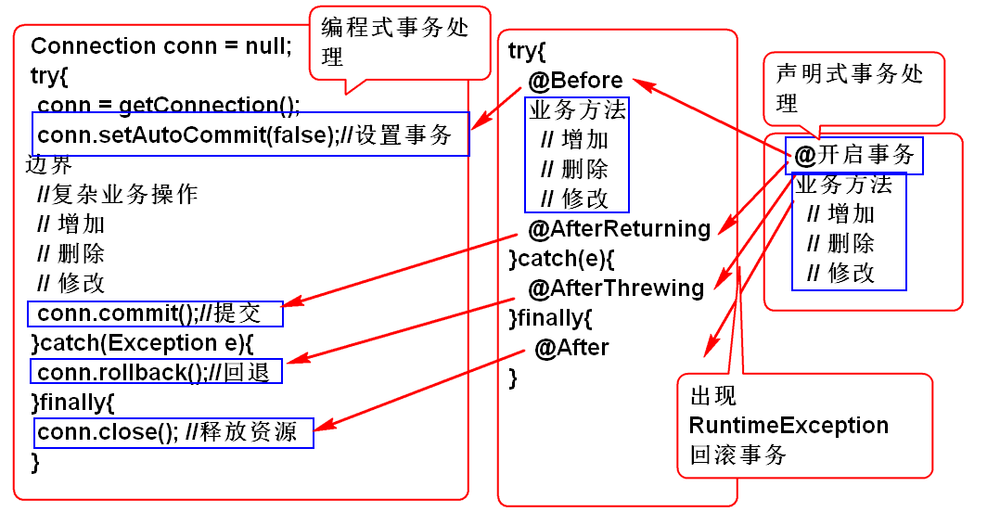
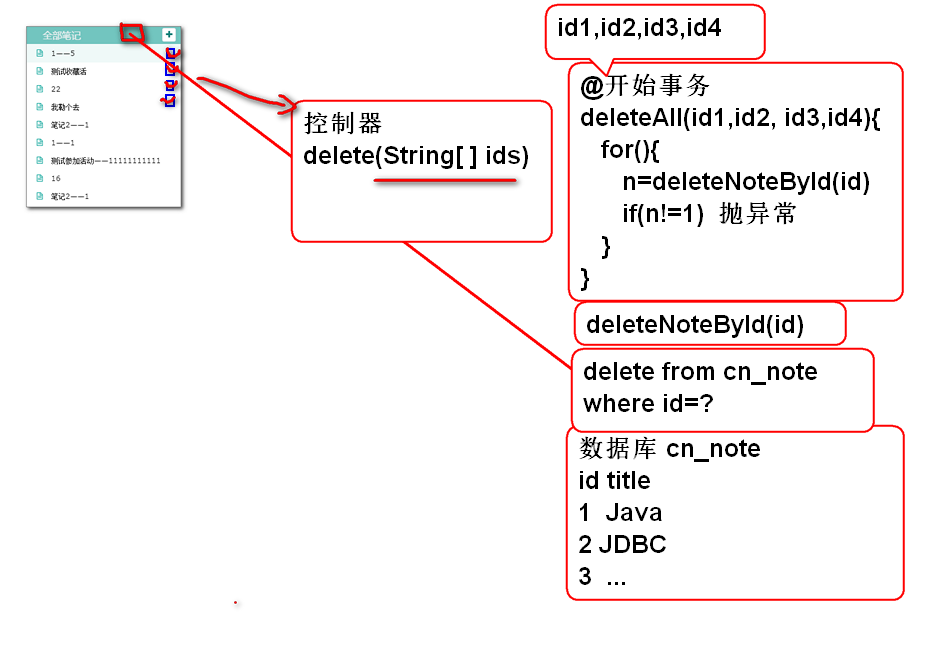
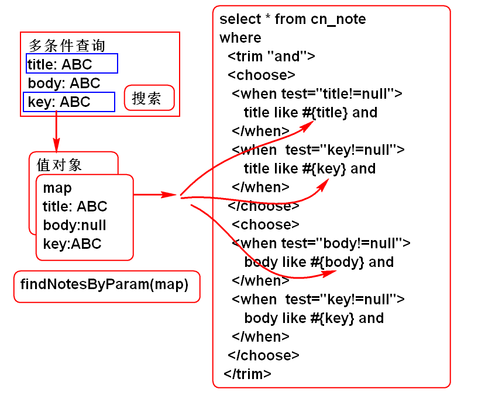

回顾: 编程式事务处理
Connection conn = null;
try{
conn = getConnection();
conn.setAutoCommit(false);//设置事务边界
//复杂业务操作
// 增加
// 删除
// 修改
conn.commit();//提交
}catch(Exception e){
conn.rollback();//回退
}finally{
conn.close(); //释放资源
}
缺点: 繁琐的编程事务处理, 产生大量的冗余重复的代码.
声明式事务处理: 利用AOP机制便捷的管理事务

配置事务管理器, MyBatis使用数据源事务管理器. spring-mybatis.xml
<!-- spring-mybatis.xml -->
<!-- 配置事务管理器, 使声明式事务管理生效 -->
<tx:annotation-driven
transaction-manager="txManager"/>
<!-- txManager 是一个 Bean 组件 -->
<!-- MyBatis 使用Spring提供的DataSourceTransactionManager
DataSourceTransactionManager 必须设置属性dataSource -->
<bean id="txManager" class="org.springframework.jdbc.datasource.DataSourceTransactionManager">
<property name="dataSource" ref="dbcp"></property>
</bean>
在需要事务保护的业务方法上使用 事务注解
@Transactional //必须配置事务管理器才能生效
public boolean moveNote(String noteId, String notebookId) throws NoteNotFoundException, NotebookNotFoundException {
if(notebookId==null||notebookId.trim().isEmpty()){
throw new NotebookNotFoundException("ID空");
}
Notebook notebook=notebookDao.findNotebookById(notebookId);
if(notebook==null){
throw new NotebookNotFoundException("没有笔记本");
}
if(noteId==null || noteId.trim().isEmpty()){
throw new NoteNotFoundException("ID不能空");
}
Note note = noteDao.findNoteById(noteId);
if(note==null){
throw new NoteNotFoundException("没有对应的笔记");
}
Note data = new Note();
data.setId(noteId);
data.setNotebookId(notebookId);
data.setLastModifyTime(System.currentTimeMillis());
System.out.println(data);
int n = noteDao.updateNote(data);
//String s = "";
//s.charAt(0);
return n==1;
}
String s = ""; s.charAt(0); 用于在方法中产生运行时异常, 触发事务回滚操作. 如果事务回滚了则.updateNote(data) 更改效果取消了.
测试: 当方法中出现运行时异常, 事务会回退.
批量删除的事务测试:

添加持久层方法 NoteDao
int deleteNoteById(String id);
添加SQL 语句 NoteMapper.xml
<delete id="deleteNoteById"
parameterType="string">
delete from
cn_note
where
cn_note_id=#{id}
</delete>
添加业务层方法 NoteService
boolean deleteNotes(String... ids);
// String[] == String... 变长参数
// 调用时候:
// String[] 参数 必须传递数组参数:
// deleteNotes(new String[]{"id1","id2","id3"})
// String... 参数可以直接传递元素:
// deleteNotes("id1","id2","id3","id4")
// 或deleteNotes(new String[]{"id1","id2","id3"})
// 编译器会将"id1","id2","id3" 替换为数组
// 注意: String... 只能使用在最后一个参数位置
实现业务方法 NoteServiceImpl
@Transactional
public boolean deleteNotes(String... ids) {
for(String id : ids){
int n = noteDao.deleteNoteById(id);
if(n!=1){
throw new NoteNotFoundException( "ID错误!");
}
}
return true;
}
5.测试 TestNoteService
@Test
public void testDeleteNotes(){
String id1 = "3febebb3-a1b7-45ac-83ba-50cdb41e5fc1";
String id2 = "9187ffd3-4c1e-4768-9f2f-c600e835b823";
String id3 = "ebd65da6-3f90-45f9-b045-782928a5e2c0";
String id4 = "fed920a0-573c-46c8-ae4e-368397846efd";
boolean b = service.deleteNotes(
id1, id2, id3, id4);
System.out.println(b);
}
> 说明: 当提交的id有错误时候, 会回滚事务, 取消删除操作, 只有ID全部是正确的情况下才会提交事务.
@Transactional(readOnly=true)
用于声明只读(readOnly)属性: 如果业务方法没有对数据进行更改, 可以使用只读属性, 可以提高方法执行性能. 建议如果只是读取数据, 可以设置这个属性为true
重点: 一般都是使用默认的隔离级别READ_COMMITTED! 性能和隔离性折中方案!!!
为什么要事务的传播: 业务方法调用业务方法时候往往需要将这些方法整合为一个事务.
事务传播属性:
REQUIRED: 是最常用的默认值!
注意: 在面试之前一定要了解事务的传播和隔离级别默认值!
事务传播案例:
添加子业务方法 NoteService
@Transactional
public void addScore(){
String s = null;
s.length();
}
在业务方法中调用子业务方法
@Transactional
public Note addNote(String userId,
String notebookId, String title)
throws UserNotFoundException,
NotebookNotFoundException {
if(userId==null||userId.trim().isEmpty()){
throw new UserNotFoundException("ID空");
}
User user=userDao.findUserById(userId);
if(user==null){
throw new UserNotFoundException("木有人");
}
if(notebookId==null||notebookId.trim().isEmpty()){
throw new NotebookNotFoundException("ID空");
}
Notebook notebook=notebookDao.findNotebookById(notebookId);
if(notebook==null){
throw new NotebookNotFoundException("没有笔记本");
}
if(title==null || title.trim().isEmpty()){
title="葵花宝典";
}
String id = UUID.randomUUID().toString();
String statusId = "0";
String typeId = "0";
String body = "";
long time=System.currentTimeMillis();
Note note = new Note(id, notebookId,
userId, statusId, typeId, title,
body, time, time);
int n = noteDao.addNote(note);
if(n!=1){
throw new NoteNotFoundException("保存失败");
}
//调用子业务方法
addScore();
return note;
}
测试: 当子业务方法出现异常时候, 子业务方法和主业务方法的事务都进行回滚操作.
MyBatis 提供了丰富的动态SQL生成功能:
<if>
<foreach>
<choose>
<where>
<set>
<trim>
用于处理数组或者List, 经常用于生成 id in (id1, id2, id3) 等条件
批量删除笔记功能(优化): 批量删除时候讲SQL优化为一个SQL可以提高数据库访问性能.

添加持久层方法: NoteDao
int deleteNotesById(String... ids);
添加SQL, NoteMapper.xml:
<delete id="deleteNotesById">
delete from
cn_note
where
cn_note_id in
<foreach collection="array"
item="id"
open="(" separator="," close=")">
#{id}
</foreach>
<choose>
<when test=""></when>
</choose>
</delete>
测试: TestNoteDao
@Test
public void testDeleteNotesById(){
String id1="c347f832-e2b2-4cb7-af6f-6710241bcdf6";
String id2="07305c91-d9fa-420d-af09-c3ff209608ff";
String id3="5565bda4-ddee-4f87-844e-2ba83aa4925f";
String id4="1ec185d6-554a-481b-b322-b562485bb8e8";
int n = dao.deleteNotesById(id1, id2, id3, id4);
System.out.println(n);
}
注意: 这个测试案例没有事务保护
优化业务层批量删除方法: NoteServiceImpl
@Transactional
public boolean deleteNotes(String... ids) {
int n = noteDao.deleteNotesById(ids);
if(n == ids.length){
return true;
}
throw new NoteNotFoundException("ID错误!");
}
这个方法有事务保护
经常用于多参数拼接查询:

案例:
添加持久层方法 NoteDao
/**
* 多参数查询
* @param param 可以接受参数 title, body, key
* @return
*/
List<Map<String, Object>> findNotesByParam(
Map<String, Object> param);
利用map封装查询参数
添加SQL NoteMapper.xml
<select id="findNotesByParam"
parameterType="map"
resultType="map">
select
cn_note_id as id,
cn_note_title as title
from
cn_note
<where>
<trim suffixOverrides="or">
<choose>
<when test="title!=null">
cn_note_title like #{title} or
</when>
<when test="key!=null">
cn_note_title like #{key} or
</when>
</choose>
<choose>
<when test="body!=null">
cn_note_body like #{body}
</when>
<when test="key!=null">
cn_note_body like #{key}
</when>
</choose>
</trim>
</where>
</select>
where 子句可以替换为
<where>标签, 其结果一样!
测试: TestNoteDao
@Test
public void testFindNotesByParam(){
Map<String, Object> param=
new HashMap<String, Object>();
param.put("title", "%ABC%");
param.put("body", "%ABC%");
param.put("key", "%1%");
List<Map<String, Object>> list=
dao.findNotesByParam(param);
for (Map<String, Object> map : list) {
System.out.println(map);
}
}
可以进行组合参数查询测试
MyBatis 可以利用@Param 标注多个参数:
接口方法 NoteDao
List<Map<String, Object>> findNotesByKey(
@Param("title") String title,
@Param("body") String body,
@Param("key") String key);
SQL NoteMapper.xml
<select id="findNotesByKey"
resultType="map">
select
cn_note_id as id,
cn_note_title as title
from
cn_note
<where>
<trim suffixOverrides="or">
<choose>
<when test="title!=null">
cn_note_title like #{title} or
</when>
<when test="key!=null">
cn_note_title like #{key} or
</when>
</choose>
<choose>
<when test="body!=null">
cn_note_body like #{body}
</when>
<when test="key!=null">
cn_note_body like #{key}
</when>
</choose>
</trim>
</where>
</select>
测试 TestNoteDao
@Test
public void testFindNotesByKey(){
List<Map<String, Object>> list=
dao.findNotesByKey(
"%1%", null, null);
for (Map<String, Object> map : list) {
System.out.println(map);
}
}